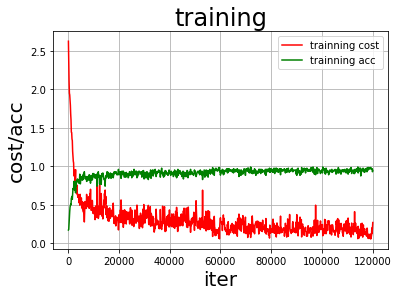
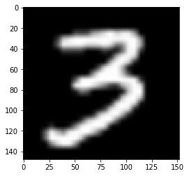

本实践使用多层感知器训练（DNN）模型，用于预测手写数字图片。

实践总体过程和步骤如下图

首先导入必要的包
numpy———->python第三方库，用于进行科学计算
PIL————> Python Image Library,python第三方图像处理库
matplotlib—–>python的绘图库 pyplot:matplotlib的绘图框架
os————->提供了丰富的方法来处理文件和目录
1 | #导入需要的包 |
Step1：准备数据。
(1)数据集介绍
MNIST数据集包含60000个训练集和10000测试数据集。分为图片和标签，图片是28*28的像素矩阵，标签为0~9共10个数字。

(2)train_reader和test_reader
paddle.dataset.mnist.train()和test()分别用于获取mnist训练集和测试集
paddle.reader.shuffle()表示每次缓存BUF_SIZE个数据项，并进行打乱
paddle.batch()表示每BATCH_SIZE组成一个batch
（3）打印看下数据是什么样的？PaddlePaddle接口提供的数据已经经过了归一化、居中等处理。
1 | BUF_SIZE=512 |
[==================================================]t/train-images-idx3-ubyte.gz not found, downloading http://yann.lecun.com/exdb/mnist/train-images-idx3-ubyte.gz
[==================================================]t/train-labels-idx1-ubyte.gz not found, downloading http://yann.lecun.com/exdb/mnist/train-labels-idx1-ubyte.gz
[==================================================]t/t10k-images-idx3-ubyte.gz not found, downloading http://yann.lecun.com/exdb/mnist/t10k-images-idx3-ubyte.gz
[==================================================]t/t10k-labels-idx1-ubyte.gz not found, downloading http://yann.lecun.com/exdb/mnist/t10k-labels-idx1-ubyte.gz
(array([-1. , -1. , -1. , -1. , -1. ,
-1. , -1. , -1. , -1. , -1. ,
-1. , -1. , -1. , -1. , -1. ,
-1. , -1. , -1. , -1. , -1. ,
-1. , -1. , -1. , -1. , -1. ,
-1. , -1. , -1. , -1. , -1. ,
-1. , -1. , -1. , -1. , -1. ,
-1. , -1. , -1. , -1. , -1. ,
-1. , -1. , -1. , -1. , -1. ,
-1. , -1. , -1. , -1. , -1. ,
-1. , -1. , -1. , -1. , -1. ,
-1. , -1. , -1. , -1. , -1. ,
-1. , -1. , -1. , -1. , -1. ,
-1. , -1. , -1. , -1. , -1. ,
-1. , -1. , -1. , -1. , -1. ,
-1. , -1. , -1. , -1. , -1. ,
-1. , -1. , -1. , -1. , -1. ,
-1. , -1. , -1. , -1. , -1. ,
-1. , -1. , -1. , -1. , -1. ,
-1. , -1. , -1. , -1. , -1. ,
-1. , -1. , -1. , -1. , -1. ,
-1. , -1. , -1. , -1. , -1. ,
-1. , -1. , -1. , -1. , -1. ,
-1. , -1. , -1. , -1. , -1. ,
-1. , -1. , -1. , -1. , -1. ,
-1. , -1. , -1. , -1. , -1. ,
-1. , -1. , -1. , -1. , -1. ,
-1. , -1. , -1. , -1. , -1. ,
-1. , -1. , -1. , -1. , -1. ,
-1. , -1. , -1. , -1. , -1. ,
-1. , -1. , -0.9764706 , -0.85882354, -0.85882354,
-0.85882354, -0.01176471, 0.06666672, 0.37254906, -0.79607844,
0.30196083, 1. , 0.9372549 , -0.00392157, -1. ,
-1. , -1. , -1. , -1. , -1. ,
-1. , -1. , -1. , -1. , -1. ,
-1. , -0.7647059 , -0.7176471 , -0.26274508, 0.20784318,
0.33333337, 0.9843137 , 0.9843137 , 0.9843137 , 0.9843137 ,
0.9843137 , 0.7647059 , 0.34901965, 0.9843137 , 0.8980392 ,
0.5294118 , -0.4980392 , -1. , -1. , -1. ,
-1. , -1. , -1. , -1. , -1. ,
-1. , -1. , -1. , -0.6156863 , 0.8666667 ,
0.9843137 , 0.9843137 , 0.9843137 , 0.9843137 , 0.9843137 ,
0.9843137 , 0.9843137 , 0.9843137 , 0.96862745, -0.27058822,
-0.35686272, -0.35686272, -0.56078434, -0.69411767, -1. ,
-1. , -1. , -1. , -1. , -1. ,
-1. , -1. , -1. , -1. , -1. ,
-1. , -0.85882354, 0.7176471 , 0.9843137 , 0.9843137 ,
0.9843137 , 0.9843137 , 0.9843137 , 0.5529412 , 0.427451 ,
0.9372549 , 0.8901961 , -1. , -1. , -1. ,
-1. , -1. , -1. , -1. , -1. ,
-1. , -1. , -1. , -1. , -1. ,
-1. , -1. , -1. , -1. , -1. ,
-0.372549 , 0.22352946, -0.1607843 , 0.9843137 , 0.9843137 ,
0.60784316, -0.9137255 , -1. , -0.6627451 , 0.20784318,
-1. , -1. , -1. , -1. , -1. ,
-1. , -1. , -1. , -1. , -1. ,
-1. , -1. , -1. , -1. , -1. ,
-1. , -1. , -1. , -1. , -0.8901961 ,
-0.99215686, 0.20784318, 0.9843137 , -0.29411763, -1. ,
-1. , -1. , -1. , -1. , -1. ,
-1. , -1. , -1. , -1. , -1. ,
-1. , -1. , -1. , -1. , -1. ,
-1. , -1. , -1. , -1. , -1. ,
-1. , -1. , -1. , -1. , 0.09019613,
0.9843137 , 0.4901961 , -0.9843137 , -1. , -1. ,
-1. , -1. , -1. , -1. , -1. ,
-1. , -1. , -1. , -1. , -1. ,
-1. , -1. , -1. , -1. , -1. ,
-1. , -1. , -1. , -1. , -1. ,
-1. , -1. , -0.9137255 , 0.4901961 , 0.9843137 ,
-0.45098037, -1. , -1. , -1. , -1. ,
-1. , -1. , -1. , -1. , -1. ,
-1. , -1. , -1. , -1. , -1. ,
-1. , -1. , -1. , -1. , -1. ,
-1. , -1. , -1. , -1. , -1. ,
-1. , -0.7254902 , 0.8901961 , 0.7647059 , 0.254902 ,
-0.15294117, -0.99215686, -1. , -1. , -1. ,
-1. , -1. , -1. , -1. , -1. ,
-1. , -1. , -1. , -1. , -1. ,
-1. , -1. , -1. , -1. , -1. ,
-1. , -1. , -1. , -1. , -1. ,
-0.36470586, 0.88235295, 0.9843137 , 0.9843137 , -0.06666666,
-0.8039216 , -1. , -1. , -1. , -1. ,
-1. , -1. , -1. , -1. , -1. ,
-1. , -1. , -1. , -1. , -1. ,
-1. , -1. , -1. , -1. , -1. ,
-1. , -1. , -1. , -1. , -0.64705884,
0.45882356, 0.9843137 , 0.9843137 , 0.17647064, -0.7882353 ,
-1. , -1. , -1. , -1. , -1. ,
-1. , -1. , -1. , -1. , -1. ,
-1. , -1. , -1. , -1. , -1. ,
-1. , -1. , -1. , -1. , -1. ,
-1. , -1. , -1. , -0.8745098 , -0.27058822,
0.9764706 , 0.9843137 , 0.4666667 , -1. , -1. ,
-1. , -1. , -1. , -1. , -1. ,
-1. , -1. , -1. , -1. , -1. ,
-1. , -1. , -1. , -1. , -1. ,
-1. , -1. , -1. , -1. , -1. ,
-1. , -1. , -1. , 0.9529412 , 0.9843137 ,
0.9529412 , -0.4980392 , -1. , -1. , -1. ,
-1. , -1. , -1. , -1. , -1. ,
-1. , -1. , -1. , -1. , -1. ,
-1. , -1. , -1. , -1. , -1. ,
-1. , -1. , -1. , -0.6392157 , 0.0196079 ,
0.43529415, 0.9843137 , 0.9843137 , 0.62352943, -0.9843137 ,
-1. , -1. , -1. , -1. , -1. ,
-1. , -1. , -1. , -1. , -1. ,
-1. , -1. , -1. , -1. , -1. ,
-1. , -1. , -1. , -1. , -0.69411767,
0.16078436, 0.79607844, 0.9843137 , 0.9843137 , 0.9843137 ,
0.9607843 , 0.427451 , -1. , -1. , -1. ,
-1. , -1. , -1. , -1. , -1. ,
-1. , -1. , -1. , -1. , -1. ,
-1. , -1. , -1. , -1. , -1. ,
-0.8117647 , -0.10588235, 0.73333335, 0.9843137 , 0.9843137 ,
0.9843137 , 0.9843137 , 0.5764706 , -0.38823527, -1. ,
-1. , -1. , -1. , -1. , -1. ,
-1. , -1. , -1. , -1. , -1. ,
-1. , -1. , -1. , -1. , -1. ,
-1. , -0.81960785, -0.4823529 , 0.67058825, 0.9843137 ,
0.9843137 , 0.9843137 , 0.9843137 , 0.5529412 , -0.36470586,
-0.9843137 , -1. , -1. , -1. , -1. ,
-1. , -1. , -1. , -1. , -1. ,
-1. , -1. , -1. , -1. , -1. ,
-1. , -1. , -0.85882354, 0.3411765 , 0.7176471 ,
0.9843137 , 0.9843137 , 0.9843137 , 0.9843137 , 0.5294118 ,
-0.372549 , -0.92941177, -1. , -1. , -1. ,
-1. , -1. , -1. , -1. , -1. ,
-1. , -1. , -1. , -1. , -1. ,
-1. , -1. , -1. , -0.5686275 , 0.34901965,
0.77254903, 0.9843137 , 0.9843137 , 0.9843137 , 0.9843137 ,
0.9137255 , 0.04313731, -0.9137255 , -1. , -1. ,
-1. , -1. , -1. , -1. , -1. ,
-1. , -1. , -1. , -1. , -1. ,
-1. , -1. , -1. , -1. , -1. ,
-1. , 0.06666672, 0.9843137 , 0.9843137 , 0.9843137 ,
0.6627451 , 0.05882359, 0.03529418, -0.8745098 , -1. ,
-1. , -1. , -1. , -1. , -1. ,
-1. , -1. , -1. , -1. , -1. ,
-1. , -1. , -1. , -1. , -1. ,
-1. , -1. , -1. , -1. , -1. ,
-1. , -1. , -1. , -1. , -1. ,
-1. , -1. , -1. , -1. , -1. ,
-1. , -1. , -1. , -1. , -1. ,
-1. , -1. , -1. , -1. , -1. ,
-1. , -1. , -1. , -1. , -1. ,
-1. , -1. , -1. , -1. , -1. ,
-1. , -1. , -1. , -1. , -1. ,
-1. , -1. , -1. , -1. , -1. ,
-1. , -1. , -1. , -1. , -1. ,
-1. , -1. , -1. , -1. , -1. ,
-1. , -1. , -1. , -1. , -1. ,
-1. , -1. , -1. , -1. , -1. ,
-1. , -1. , -1. , -1. , -1. ,
-1. , -1. , -1. , -1. , -1. ,
-1. , -1. , -1. , -1. , -1. ,
-1. , -1. , -1. , -1. ], dtype=float32), 5)Step2.网络配置
以下的代码判断就是定义一个简单的多层感知器，一共有三层，两个大小为100的隐层和一个大小为10的输出层，因为MNIST数据集是手写0到9的灰度图像，类别有10个，所以最后的输出大小是10。最后输出层的激活函数是Softmax，所以最后的输出层相当于一个分类器。加上一个输入层的话，多层感知器的结构是：输入层–>>隐层–>>隐层–>>输出层。

1 | # 定义多层感知器 |
（2）定义数据层
输入的是图像数据。图像是 28 * 28 的灰度图，所以输入的形状是[1, 28, 28]，如果图像是32*32的彩色图，那么输入的形状是[3. 32, 32]，因为灰度图只有一个通道，而彩色图有RGB三个通道。
1 | # 输入的原始图像数据，大小为1*28*28 |
（3）获取分类器
1 | # 获取分类器 |
（4）定义损失函数和准确率
这次使用的是交叉熵损失函数，该函数在分类任务上比较常用。
定义了一个损失函数之后，还有对它求平均值，训练程序必须返回平均损失作为第一个返回值，因为它会被后面反向传播算法所用到。。
同时我们还可以定义一个准确率函数，这个可以在我们训练的时候输出分类的准确率。
1 | #使用交叉熵损失函数,描述真实样本标签和预测概率之间的差值 |
（5）定义优化函数
这次我们使用的是Adam优化方法，同时指定学习率为0.001
1 | #使用Adam算法进行优化, learning_rate 是学习率(它的大小与网络的训练收敛速度有关系) |
在上述模型配置完毕后，得到两个fluid.Program：fluid.default_startup_program() 与fluid.default_main_program() 配置完毕了。
参数初始化操作会被写入fluid.default_startup_program()
fluid.default_main_program()用于获取默认或全局main program(主程序)。该主程序用于训练和测试模型。fluid.layers 中的所有layer函数可以向 default_main_program 中添加算子和变量。default_main_program 是fluid的许多编程接口（API）的Program参数的缺省值。例如,当用户program没有传入的时候， Executor.run() 会默认执行 default_main_program 。
Step3.模型训练 and Step4.模型评估
（1）创建训练的Executor
首先定义运算场所 fluid.CPUPlace()和 fluid.CUDAPlace(0)分别表示运算场所为CPU和GPU
Executor:接收传入的program，通过run()方法运行program。
1 | # 定义使用CPU还是GPU，使用CPU时use_cuda = False,使用GPU时use_cuda = True |
（2）告知网络传入的数据分为两部分，第一部分是image值，第二部分是label值
DataFeeder负责将数据提供器（train_reader,test_reader）返回的数据转成一种特殊的数据结构，使其可以输入到Executor中。
1 |
|
(3)展示模型训练曲线
1 | all_train_iter=0 |
（4）训练并保存模型
训练需要有一个训练程序和一些必要参数，并构建了一个获取训练过程中测试误差的函数。必要参数有executor,program,reader,feeder,fetch_list。
executor表示之前创建的执行器
program表示执行器所执行的program，是之前创建的program，如果该项参数没有给定的话则默认使用defalut_main_program
reader表示读取到的数据
feeder表示前向输入的变量
fetch_list表示用户想得到的变量
1 | EPOCH_NUM=2 |
Pass:0, Batch:0, Cost:2.62739, Accuracy:0.17188
Pass:0, Batch:200, Cost:0.31689, Accuracy:0.87500
Pass:0, Batch:400, Cost:0.28762, Accuracy:0.92188
Test:0, Cost:0.22491, Accuracy:0.93008
Pass:1, Batch:0, Cost:0.28741, Accuracy:0.91406
Pass:1, Batch:200, Cost:0.20729, Accuracy:0.95312
Pass:1, Batch:400, Cost:0.20814, Accuracy:0.93750
Test:1, Cost:0.15814, Accuracy:0.94877
save models to /home/aistudio/work/hand.inference.model
训练模型保存完成！
Step5.模型预测
（1）图片预处理
在预测之前，要对图像进行预处理。
首先进行灰度化，然后压缩图像大小为28*28，接着将图像转换成一维向量，最后再对一维向量进行归一化处理。
1 | def load_image(file): |
（2）使用Matplotlib工具显示这张图像。
1 | infer_path='/home/aistudio/data/data1910/infer_3.png' |

(3)创建预测用的Executer
1 | infer_exe = fluid.Executor(place) |
(4)开始预测
通过fluid.io.load_inference_model，预测器会从params_dirname中读取已经训练好的模型，来对从未遇见过的数据进行预测。
1 | # 加载数据并开始预测 |
该图片的预测结果的label为: 3测试图片下载(直接右键图片另存为即可)：